Hoofdstuk 5 beschrijft de aardingsconcepten en de veiligheid in de distributienetten. Op deze netten worden de installaties van de klanten aangesloten, waardoor het aspect van de veiligheid bijzondere aandacht verdient. Naast de beveiligingsconcepten wordt aandacht besteed aan de aanrakingsveiligheid tijdens kortsluitingen in het laag- of middenspanningsnet.
Netbeheerders transporteren en distribueren elektriciteit op diverse spanningsniveaus. Elk spanningsniveau kent zijn eigen aardingsmethode om de betrouwbaarheid, de beveiliging en de bescherming van mensen en apparatuur te kunnen garanderen. In het verleden zijn de aardingen van de hoog-, midden- en laagspanningsnetten veelal onafhankelijk van elkaar ontworpen en uitgevoerd.
Door het gebruik van storingsgevoelige elektronica moeten de aardingssystemen beter op elkaar afgestemd worden en moeten netbeheerders dit integraal aanpakken. Een aspect van de integrale aanpak is dat de aardingssystemen van netten van verschillende spanningsniveaus aan elkaar worden gekoppeld. De keerzijde hiervan is dat door integratie van aardingssystemen fouten die zich voortdoen in netten met een hogere spanning ook elders in het elektriciteitsnet merkbaar zijn. Ontwerpers moeten zich hiervan terdege bewust zijn. Een extra complicerende factor is dat in het verleden de metalen waterleidingen en elektriciteitskabels met loodmantels aanzienlijk bijdroegen aan de elektrische veiligheid in het laagspanningsnet, omdat ze over een grote lengte contact hadden met de aarde en daardoor hoge spanningsverschillen beperkten. Kunststof vervangt meer en meer de metalen waterleiding. Bij nieuwbouw en vervanging worden veelal kabels met kunststoffen buitenmantel toegepast. Omdat op deze manier het contact met de aarde afneemt, moeten aanvullende maatregelen genomen worden om de veiligheid van de laagspanningsaangeslotenen en -apparatuur te garanderen. Dit gebeurt door het integreren van de aardingssystemen van netten op alle spanningsniveaus en van de overige telecom- en kabeltelevisienetten (Waes, 2003-2).
Iets wat men zich vaak niet realiseert is dat de stroom, die bij de energiebron naar de aangeslotenen vertrekt, via een retourpad ook weer terug moet keren om een fysisch evenwicht te realiseren. Een belangrijke route hierbij is die van de aarde. Door aardingssystemen bewust in het ontwerp mee te nemen, ontstaat er een betere controle over de routes die de stromen zullen volgen om aan de natuurkundige wetten te kunnen gehoorzamen.
Een van de meest voorkomende storingen in het net is dat een kabel beschadigd wordt door graafwerkzaamheden. Hierbij kan een sluiting ontstaan tussen een fase en de beschermende omhulling van de kabel. Het zijn meestal deze sluitingen die tot verhoging van de aanrakingspanning leiden. Om deze reden focust de studie van de veiligheid zich op de toegepaste aardingsconcepten en de gevolgen van fase-aardsluitingen. Dit hoofdstuk gaat in op de aspecten rondom de aarding en de veiligheid. De berekening van de grootte van de kortsluitstromen wordt behandeld in hoofdstuk 10.
De veiligheid van de netten wordt geborgd door het nemen van de juiste veiligheidsmaatregelen tijdens ontwerp, aanleg, bedrijfsvoering, inspectie en onderhoud. Een belangrijk onderdeel van de veiligheid is de veiligheidsaarding.
Het aarden van een elektriciteitsnet begint bij het voedingspunt. Dit is meestal de secundaire wikkeling van een transformator. Indien de secundaire wikkeling een naar buiten uitgevoerd sterpunt heeft, kan het sterpunt geaard worden: direct (star) of via een aardingsimpedantie. Indien het voedingspunt geen naar buiten uitgevoerd sterpunt heeft, kan met behulp van een aardingstransformator een kunstmatig sterpunt gecreëerd worden, dat via een impedantie geaard is. Ook bestaat de mogelijkheid om een net niet te aarden.
In netwerken met een zwevend sterpunt, zoals afgebeeld in figuur 5.1, bestaat geen specifiek retourpad voor de stromen in de mantels van de kabels, die vloeien tijdens het contact van een fase met de aarde. De retourstromen kunnen nu alleen vloeien door de in het netwerk verspreid aanwezige capaciteiten tussen de fasegeleiders en de mantels van de kabels. Deze stromen zijn capacitief en de grootte is afhankelijk van de totale lengte van het zwevende net achter de voedingstransformator. Zwevende netten worden met name in de MS-distributienetten toegepast.

De gekoppelde spanningen tussen de fasen onderling worden in geval van een fase-aardsluiting nauwelijks beïnvloed, zodat de belastingen achter een Dy-transformator er niets van merken. Maar de waarden van de spanningen van de niet gestoorde fasen ten opzichte van aarde zullen toenemen met een factor √3. Dit is afgebeeld met de spanningsvectoren in figuur 5.2. De linkergrafiek toont de spanningsvectoren ten opzichte van de aardpotentiaal. In de normale bedrijfstoestand is de spanning van het niet geaarde sterpunt gelijk aan de aardpotentiaal en valt het beginpunt van de vectoren samen met de oorsprong van de grafiek. In geval van een fase-aardsluiting in fase a is de spanning van die fase ten opzichte van de aarde nul. Als gevolg verschuift het niet geaarde sterpunt van het net in de negatieve richting van de oorspronkelijke spanningsvector van fase a. Daarmee verschuiven de vectoren van de fasen b en c ook in diezelfde richting. Het gehele stelsel is nu verschoven en dit is zichtbaar gemaakt met de gestreepte vectoren. Als gevolg geven de rode vectoren de spanning aan van de fasen b en c ten opzichte van de aarde. De gekoppelde spanningen tussen de fasen onderling blijven ongewijzigd, maar de fasespanningen ten opzichte van de aarde wijzigen ingrijpend.
De kortsluitstroom in de kortgesloten fase kan enkele honderden Ampère bedragen maar hoeft in beginsel, vanwege de relatief lage kortsluitstroom, niet veel schade aan te richten. Indien het net uitgebreid wordt, moet rekening gehouden worden dat de kortsluitstroom niet te groot wordt. Maatregelen kunnen zijn het zwevende net te splitsen of het aardingsprincipe van het net te wijzigen door het net met een aardingstransformator te aarden.
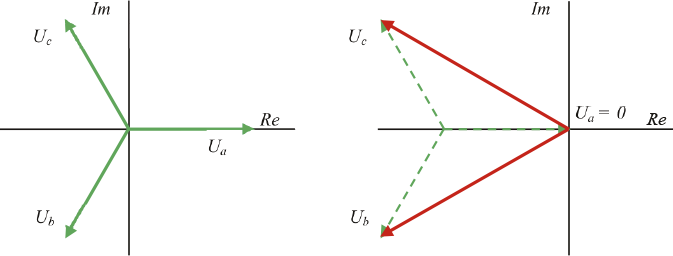Een fase-aardsluiting in een zwevend net kan in praktijk tot enkele uren blijven bestaan. Dit wordt beschouwd als een belangrijk voordeel omdat het net tijdens de storing in bedrijf kan blijven. Het lokaliseren van de kortsluiting is echter lastig. De foutlocatie is pas bekend als de streng, waarin de fout zich bevindt, wordt afgeschakeld. De fasespanningen nemen na het afschakelen weer de juiste waarden aan. De noodzaak tot het op deze manier zoeken van de fout wordt als een belangrijk nadeel beschouwd. Een ander nadeel is dat het voor komt dat in netwerken met weinig kabellengte de kortsluitstroom bij een fase-aardsluiting zo klein is dat de fout herhaaldelijk verdwijnt en vervolgens herontsteekt, waardoor hoge spanningspieken ontstaan. Dit verschijnsel wordt veroorzaakt doordat door het capacitieve karakter van de foutstroom de kortsluiting dooft op het moment van de maximale waarde van de spanning. Herhaaldelijk ontsteken kan leiden tot overspanningen die 3,5 maal zo groot zijn als de fasespanning (EnergieNed, 1996). Een derde nadeel is dat door de verhoogde spanning tijdens de fase-aardsluiting een tweede kortsluiting ontstaat in een van de gezonde fasen, leidend tot een grote kortsluitstroom waarna het net wordt afgeschakeld.
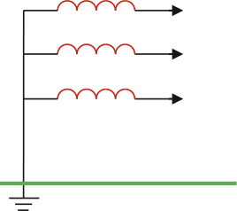In star geaarde netten is het sterpunt van de secundaire wikkeling van de voedingstransformator direct verbonden met de aarde, zoals afgebeeld in figuur 5.3. Met name LS-netten worden star geaard. In werkelijkheid is de aardingsimpedantie geen nul Ohm, maar wordt deze bepaald door de aardverspreidingsweerstand. Dit retourpad voor de aardstromen heeft een lage impedantie. Fase-aardsluitingen leiden daarom tot grote kortsluitstromen en veroorzaken hierdoor spanningsdips in het net. In tegenstelling tot een fout in een zwevend net zal een eenmaal ontstane fout in een star geaard net meestal niet spontaan doven. In een geaard net treden relatief grote foutstromen op. Dit wordt beschouwd als een voordeel omdat de fout met behulp van de beveiliging goed is te detecteren en daarmee selectief kan worden afgeschakeld. Bij het ontwerp van een net moet rekening gehouden worden met de situatie dat de retourgeleiders en kabelmantels in staat zijn deze kortsluitstromen te voeren.
Tijdens een fase-aardsluiting zullen de niet gestoorde fasen nauwelijks beïnvloed worden. Rekening moet worden gehouden met de mogelijkheid dat de aardpotentiaal op de foutlocatie sterk verhoogd wordt.

Aarding van het sterpunt via een impedantie wordt in MS-netten toegepast en gebeurt meestal met een spoel of met een aardingstransformator, zoals afgebeeld in figuur 5.4. De impedantie van een spoel en een aardingstransformator bestaat voornamelijk uit reactantie. De weerstand is zeer klein, zodat de verliezen bij asymmetrie, wanneer er een stroom via het sterpunt kan lopen, klein zijn. Sterpuntsaarding via een impedantie wordt toegepast om de hoge foutstromen te beperken. De foutstroom en de retourstroom zijn nog steeds hoog genoeg om door de beveiliging te worden gedetecteerd en om selectief te worden afgeschakeld. Dit is noodzakelijk wanneer kabels worden toegepast met een beperkte doorsnede van het aardscherm, zoals kunststofkabels.
Netwerken kunnen worden geaard met een hoge of een lage impedantie. In netwerken die met een hoge impedantie geaard zijn, zullen de fase-aardsluitstromen klein zijn en zullen de niet gestoorde fasen een spanning ten opzichte van de aarde aannemen die hoger is dan in de ongestoorde situatie. In netwerken die met een lage impedantie geaard zijn, is de fase-aardsluitstroom groot, maar wordt deze beperkt door de impedantie, bijvoorbeeld een spoel. Hierdoor is de kortsluitstroom gecontroleerd kleiner dan in een star geaarde netsituatie en zijn spanningsdips en verhoging van de aardpotentiaal op de storingslocatie beperkt.
Sterpuntsaarding met een lage impedantie werd in het verleden alleen toegepast bij kabels met kleine doorsnede van het aardscherm. Tegenwoordig wordt deze vorm van sterpuntsaarding steeds vaker toegepast omdat dit een goed compromis is tussen star geaarde netten en netten die met een hoge impedantie geaard zijn. In middenspanningsnetten die geaard zijn met een lage impedantie, moet bij lange strengen worden berekend of een fase-aardfout aan het einde van de streng niet leidt tot een foutstroom die te klein is om door de fasebeveiliging gedetecteerd te worden. Dit aspect dient bij ieder netontwerp te worden gecontroleerd. Indien meerdere strengen in serie worden bedreven, dient de beveiliging van de voorliggende streng te functioneren als back-up beveiliging van de onderliggende streng. De back-up beveiliging moet in staat zijn om een aardfout aan het einde van de achterliggende streng te detecteren. Ook dit hoort bij ieder ontwerp gecontroleerd te worden.
Een bijzondere vorm van impedantie-aarding is de toepassing van een blusspoel, ook wel Petersen spoel genoemd. De waarde van de spoel wordt zodanig berekend dat de capacitieve stroom bij een fase-aardfout door de inductieve stroomcomponent van de spoel gecompenseerd wordt. Een nadeel dat bij deze oplossing kan optreden is dat de fase-aardsluitstroom bij toepassing van een blusspoel zeer klein wordt. Hierdoor kan een fout doven en eventueel weer herontsteken. Deze manier van aarden wordt met name bij bovengrondse netten toegepast. De oplossing werkt in de praktijk niet goed indien zich veel kabels in het net bevinden.
In het geval dat geen sterpunt beschikbaar is, kan het netwerk geaard worden met behulp van een aardingstransformator, ook wel sterpuntstransformator of nulpunttransformator genoemd. De impedantie van een aardingstransformator bestaat voornamelijk uit reactantie, zodat de verliezen beperkt zijn. Afhankelijk van de grootte van de impedantie van de aardingstransformator kan deze manier van aarden worden behandeld als aarding met hoge of met lage impedantie. De opbouw en de werking van de aardingstransformator wordt beschreven in paragraaf 8.4.
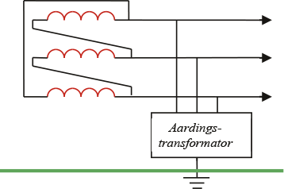Bij een spanningsniveau vanaf 50 kV wordt het sterpunt direct of via een blusspoel geaard. Als er in een direct geaard net een éénfase-aardsluiting optreedt, dan is de aardsluitstroom van dezelfde orde grootte als de kortsluitstroom bij een driefasenkortsluiting en de beveiligingsinrichting zal het gestoorde circuit afschakelen. Een aantal bovengrondse netten is via een blusspoel, een zogenaamde Petersen-spoel, geaard. In een blusspoel geaard net is de waarde van de aardsluitstroom klein, zodat de beveiligingsinrichting van de gestoorde fase niet afschakelt maar slechts een richtingsindicatie geeft. Veel fase-aardfouten in bovengrondse netten worden namelijk veroorzaakt door takken of andere objecten of door blikseminslag. Deze fouten zijn zelfherstellend en leiden niet tot een onderbreking.
De meeste middenspanningsnetten worden gevoed via HS/MS-transformatoren, waarvan de secundaire wikkelingen in driehoekschakeling geconfigureerd zijn. Ook de primaire wikkelingen van de aangesloten MS/LS-distributietransformatoren zijn in driehoekschakeling geconfigureerd. De middenspanningsnetten hoeven in principe niet geaard te zijn, maar veel van deze middenspanningsnetten zijn impedantie geaard. Figuur 5.6 toont de aardingssituatie in het distributienet en de schakelingen van de HS/MS-transformator en de MS/LS-transformator. Het HS-net is impedantie geaard (vaak Petersen aarding). Het MS-net is zwevend en het LS-net is impedantie geaard. Soms worden MS-netten met een aardingstransformator geaard.

In een klein net zal een fase-aardsluiting in een kabel niet direct leiden tot een afschakeling. Zolang de kortsluitstroom niet schadelijk is voor de kabelschermen, kan de fout blijven staan. De fout kan worden opgespoord en kan worden geïsoleerd zonder dat de energielevering onderbroken wordt. Doordat bij een fase-aardfout in een zwevend net de spanning tussen fase en aarde van de niet gestoorde fasen even groot wordt als de gekoppelde spanning, kan dit leiden tot een tweede fase-aardsluiting, die samen met de eerste sluiting wel leidt tot een grote kortsluitstroom en dus tot een afschakeling.
In grote middenspanningsnetten kan bij een fase-aardfout de capacitieve kortsluitstroom zo groot worden dat deze wel schade aan de kabels kan aanrichten. In dat geval is het wel gewenst dat een fase-aardsluiting wordt afgeschakeld. Het middenspanningsnet wordt dan impedantie geaard. Dit gebeurt hetzij met een spoel op het sterpunt, hetzij met behulp van een aardingstransformator indien er geen sterpunt aanwezig is. Elke fase-aardsluiting zal in dat geval leiden tot aanspreken van de beveiliging.
Bij het ontwerpen van een middenspanningsnet moet rekening gehouden worden met onderstaande zaken:
Het is duidelijk dat niet altijd aan alle eisen maximaal kan worden voldaan. Het ontwerpen van een middenspanningsnet is dan ook altijd een proces waarbij op tegenstrijdige eisen geoptimaliseerd moet worden. Onder alle omstandigheden moet echter de aanrakingsveiligheid gewaarborgd zijn.
Impedantie geaarde middenspanningsnetten worden ontworpen op een fase-aardsluitstroom van 2000 A bij het onderstation. Deze waarde mag niet leiden tot onacceptabele spanningsstijging van de lokale aarde en ook niet tot te grote stromen door de kabelmantels.
Laagspanningsnetten worden gevoed met MS/LS-distributietransformatoren, waarvan de secundaire wikkelingen in sterschakeling geconfigureerd zijn. In principe zijn deze netten star geaard. De aardingsimpedantie wordt bepaald door het aantal aardelektroden en de aardverspreidingsweerstand van de aardelektroden. De kortsluitstroom bij een fase-aardsluiting in het LS-net is groot en zal door de beveiliging in het netstation afgeschakeld worden.
De aardingssystemen in laagspanningsnetten achter de distributietransformator kunnen op diverse wijzen worden uitgevoerd, waarbij ten aanzien van de veiligheid naar keuze veel of weinig verantwoording bij de aangeslotene wordt gelegd. De varianten zijn beschreven in de internationale norm IEC 60364. In de benaming van de aardingssystemen wordt een lettercodering gebruikt, waarvan de meest gebruikte zijn aangeduid met TT en TN. De eerste letter heeft betrekking op de aarding van de voedingsbron, dus in de meeste gevallen van de distributietransformator. Deze heeft bij de standaard 400V-laagspanningsnetten de aanduiding T, die staat voor ‘Terre’, hetgeen betekent dat het sterpunt van de secundaire wikkeling van de distributietransformator star geaard is. De norm voorziet ook in een geïsoleerd of met hoge impedantie geaard sterpunt, aangeduid met de letter I. Voor de tweede en volgende letters geldt:
De beschermingsleiding wordt aangeduid met de term PE, dat staat voor ‘Protective Earth’. Meestal wordt de afscherming van een kabel gebruikt als PE-geleider.

In een TT-stelsel is één punt van de voedingsbron rechtstreeks met aarde verbonden en zijn de metalen gestellen in de installatie verbonden met aardelektroden die elektrisch onafhankelijk zijn van de aardelektroden van de voedingsbron. In het TT-stelsel zijn de aardingssystemen van de aangeslotene en het distributienet dus gescheiden, zie figuur 5.7. In dit stelsel is de klant zelf verantwoordelijk voor het onderhoud en het goed functioneren van zijn eigen aarding. Het retourpad voor fase-aardsluitingen bestaat uit de aardelektrode bij de aangeslotene, de aardelektroden in het netstation en de weerstand van de grond tussen de aangeslotene en het netstation. De weerstand van het retourpad moet zo klein zijn dat de beveiliging een fase-aardfout kan afschakelen. Een vuistregel voor de weerstand Rc van het retourpad in het geval dat smeltveiligheden zijn toegepast is:
 |
[ |
5.1 |
] |
waarin In de nominale stroom van de smeltveiligheid is (Provoost, 2004). De impedantie van het totale circuit moet laag genoeg zijn om de spanningsverhoging te beperken en een snelle afschakeling te verzekeren. Deze methode is alleen haalbaar bij grond met een lage specifieke weerstand. Een smeltpatroon van 16 A heeft op grond van vergelijking 5.1 een impedantie van 2 Ω nodig voor het retourpad. Op zandgrond is een smeltpatroon van 16 A niet haalbaar in dit aardingssysteem.
In het verleden was er bij de juiste grondsoort nooit een probleem met de grootte van de weerstand van het retourpad, mede door het op veel plaatsen aanwezig zijnde contact met aarde. Echter, door het vervangen van metalen leidingen door kunststof leidingen en door het toepassen van kunststof in kabelmantels, wordt in het TT-stelsel de weerstand van het aardingscircuit ten opzichte van de oude situatie vergroot. In de gevallen dat de retourweerstand niet klein genoeg is, worden als alternatief (door de aangeslotene) aardlekschakelaars ingezet. Een voordeel van de aardlekschakelaar is dat deze al bij een kleine fase-aardfoutstroom uitschakelt waardoor de kans op elektrocutie, beschadiging of brand klein is. Een nadeel is dat aardlekschakelaars kunnen weigeren, waardoor de fout blijft staan. Dit maakt het nodig dat aardlekschakelaars regelmatig door de aangeslotenen moeten worden getest.
In het TN-stelsel wordt de veilige aarding door de netbeheerder geleverd. In principe is één punt van de voedingsbron rechtstreeks met aarde verbonden en zijn de metalen gestellen in de installaties door beschermingsleidingen met dat punt verbonden. Dit wordt gerealiseerd met een laagohmige verbinding tussen de veiligheidsaarde van de aangeslotene en de bedrijfsaarde van het netstation. Een TN-stelsel levert altijd een voldoende lage impedantie voor het retourpad, met een orde grootte van 0,3 Ω. Met de vuistregel (vergelijking 5.1) kan worden berekend dat bij deze impedantie van het retourpad alle gangbare smeltpatronen afschakelen bij een fase-aardfout in de installatie van de aangeslotene.

In het TN-stelsel zijn diverse uitvoeringsvormen mogelijk. In een TN-S-stelsel zijn de nul- en PE-geleider gescheiden uitgevoerd, zie figuur 5.8. Het elektriciteitsvoorzieningscircuit en het aardingscircuit zijn gescheiden en de stroomverdeling is goed gedefinieerd. Dit stelsel gebruikt vijf geleiders, die in de meeste laagspanningskabels voorkomen: drie fasen, nul en afscherming als PE-geleider. Een onderbreking in de PE-geleider leidt in dit systeem tot een veiligheidsrisico.
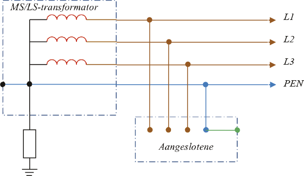In een TN-C-stelsel zijn de nulgeleider en de PE-geleider gecombineerd in een enkele PEN-geleider, zie figuur 5.9. Deze systemen gebruiken maar 4 geleiders en worden vaak toegepast in industriële netten. Een onderbreking in de PEN-geleider leidt tot spanningsproblemen en tot een veiligheidsrisico.
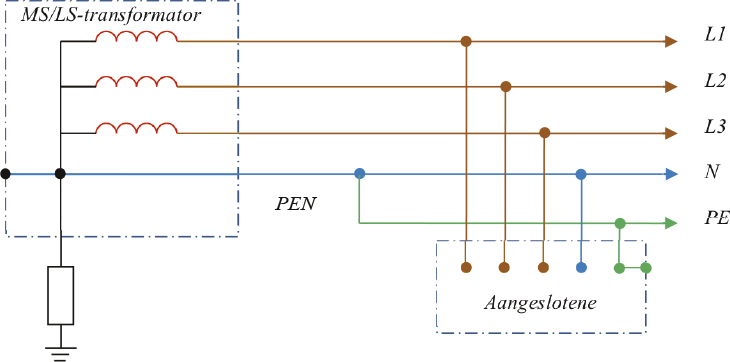Het TN-C-S-stelsel is een combinatie van een TN-C- en een TN-S-stelsel, zie figuur 5.10. Het transportgedeelte vanaf de distributietransformator heeft het TN-C-stelsel en het distributiegedeelte bij de aangeslotenen heeft het TN-S-stelsel.
Tegenwoordig zijn de meeste laagspanningsnetten gebaseerd op het TN-C-S-stelsel. Om de veiligheid te garanderen zijn in het TN-C gedeelte de vieraderige kabels voorzien van een koperen afscherming van voldoende geleiderdoorsnede. In alle moffen worden de nul en de afscherming met elkaar verbonden. Ook in de installatie van de aangeslotene zijn nul en PE met elkaar verbonden. Hierdoor ontstaat een veilig retourpad, zelfs indien de nulgeleider is onderbroken. Het risico dat zowel de nulgeleider als de afscherming zijn onderbroken wordt verwaarloosd (Provoost, 2004). Deze manier van aarden combineert de voordelen van de TN-S- en TN-C-stelsels. De parallelschakeling van de nulgeleider en de afscherming reduceert bovendien de retourimpedantie voor asymmetrische stromen en reduceert spanningsdips als gevolg van het starten van zware enkelfasige belastingen. Figuur 5.11 geeft schematisch de toepassing van het TN-C-S-stelsel weer voor een streng van het laagspanningsnet.

Samenvattend houdt aarding via het TN-stelsel voor een LS-net onder meer het volgende in:
Door de verbinding van de veiligheidsaarde van de aangeslotene met de bedrijfsaarde, ontstaat het risico van een verhoogde aanrakingsspanning bij kortsluitingen in het LS-distributienet. Meer hierover in paragraaf 5.7.2. Indien de aardingssystemen ook met die van hogere spanningsniveaus zijn gekoppeld, hebben ook kortsluitingen in die netten invloed op de veiligheid van de aangeslotene in het laagspanningsnet. Hiermee moet terdege rekening gehouden worden bij het ontwerpen van het net. Meer hierover in paragraaf 5.7.3.
Van een op het TN-stelsel gebaseerd laagspanningsnet wordt de veiligheid geëvalueerd voor de situaties van fase-aardsluitingen met de beschermingsleiding. Maar ook de situatie dat een fase-aardsluiting optreedt met een geleidend voorwerp, dat via een impedantie met de beschermingsleiding is verbonden, kan leiden tot potentiaalverhoging van de beschermingsleiding en moet worden geëvalueerd. De spanning op de beschermingsleiding mag ook in die gevallen niet te hoog worden. Onderstaande vuistregel geldt voor de situatie van een fase-aardfout op een geleidend object dat niet rechtstreeks met de beschermingsleiding is verbonden:
 |
[ |
5.2 |
] |
waarin:
RB totale aardverspreidingsweerstand van alle parallelgeschakelde aardelektroden plus beschermingsleiding (Ω) RE minimum contactweerstand met aarde van vreemde geleidende delen die niet met een beschermingsleiding zijn verbonden, maar via welke een fase-aardfout zou kunnen optreden (Ω) U0 nominale fasespanning (V)
Dit betekent dat in een LS-net met een nominale spanning van 230 V de verhouding van RB tot RE kleiner moet zijn dan 0,278. Indien wordt aangenomen dat de contactweerstand op de plek van de fase-aardsluiting RE minimaal 10 Ω is, zal de waarde van de foutspanning op de beschermingsleiding ten opzichte van aarde de 50 V niet overschrijden indien de totale aardverspreidingsweerstand van alle parallelgeschakelde aardelektroden plus beschermingsleiding RB kleiner dan of gelijk aan 2,7 Ω is.

Bij een fase-aardsluiting loopt de retourstroom via diverse locaties met aardcontact. Een belangrijke aardcontact, dat overigens langzamerhand verdwijnt, is het contact van de metalen mantels van GPLK-kabels. Verder zijn er talloze lokale aardcontacten in het midden- en laagspanningsnet. In een laagspanningsdistributienet is veel ‘verborgen aarde’ aanwezig. Het kan zijn dat op elke huisaansluiting of OV-aansluiting de PE-leiding een zeker contact met aarde maakt, hetzij direct via een geslagen aardelektrode, hetzij indirect via aansluiting op een geleidend buizenstelsel of via contact met overige in de grond bevestigde metalen delen. Een aardcontact met redelijk gedefinieerde weerstandswaarde wordt met een aardelektrode bereikt.
De aardelektrode wordt gemodelleerd met een weerstand naar de ‘verre aarde’. De weerstand van de aardelektrode is afhankelijk van de specifieke bodemweerstand ρ en de fysieke afmetingen van de aardelektrode. Voor een enkele ronde penvormige aardelektrode geldt formule 5.3 voor berekening van de aardverspreidingsweerstand (Happoldt, 1978):
 (Ω) (Ω) |
[ |
5.3 |
] |
met:
ρ specifieke weerstand van de bodem (Ωm) L lengte van de verticale aardelektrode in de grond (m) d diameter van de aardelektrode (m)
De specifieke weerstand is afhankelijk van het bodemmateriaal en de hoeveelheid vocht in en de temperatuur van de bodem. Tabel 5.1 geeft een overzicht voor diverse bodemsoorten.
Bodemsoort |
ρ minimaal [Ωm] |
ρ maximaal [Ωm] |
Veen |
5 |
40 |
Klei |
20 |
200 |
Zand |
200 |
2500 |
Kiezel |
2000 |
3000 |
Het verschil tussen de minimale en maximale waarden van de specifieke bodemweerstand wordt bepaald door het gewichtspercentage van het in het materiaal aanwezige vocht. Dit kan gemeten worden tijdens het slaan van de aardelektrode, ervan uitgaande dat de meting representatief is voor de laagste vochtigheid van de bodem.
In Nederland is de aardelektrode vaak een geslagen aardelektrode van rond koperdraad met een doorsnede van 50 mm2 (d = 0,0075 m). Er worden ook andere soorten aardelektrodes toegepast, zoals massief staal (rond, ster- of kruisvormig) voorzien van een goedhechtende koperlaag aan de oppervlakte of een verzinkte rond stalen variant. Voor het maken van een aardelektrode met een aardverspreidingsweerstand kleiner dan 1 Ω moeten vaak meerdere parallelle aardelektroden geslagen worden, op ruime afstand van elkaar. Volgens formule 5.3 is de aardverspreidingsweerstand voor een aardelektrode van 10 m met een diameter van 7,5 mm in bodem en met een specifieke weerstand van 100 Ωm gelijk aan 13,7 Ω. De literatuur (Happoldt, 1978) (Tleis, 2008) geeft formules voor het berekenen van parallelle of andere vormen van aardelektroden.
In een distributienet worden voor alle spanningniveaus specifieke waarden voor de aardverspreidingsweerstanden toegepast. Onderstaande waarden kunnen voorkomen.
De aarding moet altijd zodanig aangelegd zijn, dat dit niet leidt tot spanningsverhogingen met bijbehorende verhoogde risico’s voor mens en apparatuur. De aanrakingsspanning wordt niet alleen bepaald door de spanning van de PE-leiding en de lokale aarde, maar vooral door de spanningsverschillen tussen alle metalen voorwerpen die gelijktijdig aangeraakt kunnen worden. Om die reden worden zo veel mogelijk alle niet tot de elektrische installatie behorende geleidende delen op een centrale plaats (de hoofdaardrail) met de PE-leiding van de elektrische installatie verbonden, zodat alle gelijktijdig aanraakbare metalen gestellen dezelfde potentiaal voeren. De norm NEN 1010 beschrijft dat voor een goede potentiaalvereffening in elk gebouw alle geleidende delen van watervoorziening, gasvoorziening, verwarmingsystemen, luchtbehandelingsystemen, staalconstructie en betonbewapening moeten zijn verbonden met de hoofdaardrail. De potentiaalvereffening moet zo dicht mogelijk bij de plaats van binnenkomst in het gebouw plaatsvinden. Bovendien wordt aanbevolen om de beschermingsleiding op zoveel mogelijk plaatsen met beschikbare goed geaarde delen te verbinden. Bij een TT-stelsel moet ook de lokale aardelektrode op de hoofdaardrail worden aangesloten. Tevens moeten de beschermende leidingen van telecom- en kabeltelevisienetten op de centrale plaats geaard worden. Dit is minder van belang voor de aanrakingsveiligheid, maar wel voor de bescherming van elektronische apparatuur,
De aarding in het distributienet is verspreid over alle netstations en alle aansluitingen. Elk netstation heeft een eigen aarding en ook LS-aansluitingen kunnen een aarding hebben. In een LS-net waar het TN-stelsel is toegepast, hoeft een aangeslotene theoretisch geen eigen lokale aardelektrode te hebben. Het enige aardpunt bevindt zich dan bij de MS/LS-distributietransformator. In praktijk echter, is er altijd wel ergens een verbinding met aarde aanwezig, hetzij via aardelektrodes of kabelmantels, hetzij indirect via contact met in de grond gelegde geleidende buizen.
In een distributienet zijn alle aardcontacten met elkaar verbonden. De invloed van verspreide aardcontacten kan vertaald worden in een equivalente aardimpedantie Zeq. Deze kan worden berekend vanuit een laddernetwerk. De berekening volgt uit ontwikkeling van de reeks voor n segmenten van een laddernetwerk:

In formulevorm geldt voor n secties:
[ |
5.4 |
] |
waarin:
Zs impedantie van de PE-leiding tussen twee secties, eventueel parallel aan de nulgeleider Zp impedantie van het aardcontact Zeq,n-1 equivalente impedantie van de voorgaande sectie
Voor de meeste toepassingen kan de invloed van de kabelimpedantie verwaarloosd worden en wordt de equivalente aardingsimpedantie van n aardcontacten benaderd volgens:
[ |
5.5 |
] |
Kortsluitingen waarbij contact gemaakt wordt met aarde leiden tot een spanningsverhoging op het aardsysteem of de lokale aarde. Als alle aardingssystemen met elkaar zijn verbonden, kan op alle niveaus een kortsluiting leiden tot een gevaarlijke situatie bij een aangeslotene.
In een onderstation zijn de aardingssystemen van de hoogspannings- en middenspanningsnetwerken met elkaar verbonden. De retourstroom van een fase-aardsluiting in het hoogspanningsnetwerk zal niet alleen door het retourpad van het hoogspanningsnetwerk vloeien, maar ook door de aarding van het onderstation en de mantels van de middenspanningskabels. Met name kabels die parallel lopen aan de hoogspanningslijn, kunnen een grote retourstroom voeren. Deze stromen leiden tot potentiaalverhoging van de retourleidingen in het middenspanningsnetwerk.
Tijdens een fase-aardsluiting in het middenspanningsnetwerk vloeit de retourstroom gedeeltelijk door de mantels van de middenspanningskabels en gedeeltelijk via de aardelektrodes door de aarde. In de netstations zijn de aardingssystemen van het middenspannings- en laagspanningsnetten met elkaar verbonden. De stromen door de aardelektrodes in de distributieruimten leiden tot potentiaalverhoging van de aarde in de netstations, waardoor ook de spanning op het aardingssysteem van de MS/LS-distributietransformatoren verhoogd worden. Als de aardingssystemen in het laagspanningsnet verbonden zijn met het aardingssysteem van de distributietransformator, kunnen deze potentiaalverhogingen merkbaar zijn in de installaties van de aangeslotenen. De duur van deze spanningsverhogingen wordt bepaald door de duur van de kortsluitstroom en is daarmee afhankelijk van de hoogte van de kortsluitstroom en de werking van de beveiliging. De hoogte van deze spanningsverhogingen wordt bepaald door grootte van de retourstroom en de impedanties van de aardelektrodes en afscherming van de kabel.
De grootste retourstroom ontstaat bij een kortsluiting tussen een fase en aarde. In zwevende middenspanningsnetten is de retourstroom ongeveer 1,5 A per km kabel, hetgeen voor netten met typische gesommeerde lengten van 130 tot 400 km een stroom oplevert tussen 200 en 600 A. Indien deze stromen groter zijn dan 300 A kunnen zij door beveiligingen worden gedetecteerd en afgeschakeld. Indien deze stromen kleiner zijn dan 300 A liggen zij in de ordegrootte van normale bedrijfsstromen en zullen zij door eenvoudige maximum stroom-tijdbeveiligingen niet worden afgeschakeld. Een oplossing hiervoor is om deze netten met een impedantie te aarden, bijvoorbeeld met een aardingstransformator. In geaarde middenspanningsnetten is de retourstroom veel groter. Deze ligt in de ordegrootte van 700 tot 2000 A (Provoost, 2004). Vanwege de hoogte van de kortsluitstroom kan de beveiliging selectief ingrijpen en wordt de duur van de kortsluiting bepaald door deze beveiliging.
Laagspanningsnetten zijn in principe star geaard. De aardingsimpedantie wordt bepaald door de aardverspreidingsweerstand van de aardelektrode. Een kortsluiting tussen fasegeleider en nulgeleider of aarde resulteert in een potentiaalverhoging van de nulgeleider, afscherming van de kabel of de aarde. Met name bij de toepassing van een TN-stelsel moet terdege rekening worden gehouden met het feit dat kortsluitingen in het distributienet leiden tot verhoogde aanrakingsspanningen in het aardingssysteem van de aangeslotenen. Deze spanningen en de duur daarvan moeten begrensd blijven tot veilige waarden. De netontwerper moet de hoogte van de aanrakingsspanningen en de tijdsduur controleren. Dit kan bijvoorbeeld met behulp van een computerprogramma voor LS-netontwerp (Phase, 2009).
Teneinde de impedantie van het retourpad zo klein mogelijk te houden, hebben de laagspanningskabels een nulgeleider en een koperen afscherming. Bovendien worden vaak om reden van veiligheid in alle moffen de nulgeleider en het kabelscherm met elkaar verbonden, zoals aangegeven in figuur 5.11.
Storingen zoals fase-aardsluitingen zijn een veel voorkomend verschijnsel. Het is belangrijk dat die storingen niet mogen leiden tot gevaarlijke situaties. Een spanningsverhoging op de aardingsvoorzieningen kan beperkt worden door ervoor te zorgen dat het retourpad een voldoende lage impedantie heeft. De eisen waaraan netten en installaties moeten voldoen zijn vastgelegd in de nationale norm NEN 1010. In die norm ligt de nadruk op het tijdig afschakelen bij een spanningsverhoging op de aardingsvoorziening. Door ongevallen in het verleden zijn de netbeheerders verantwoordelijk gesteld voor situaties waarin een aardingsvoorziening niet meer voldoet. Mede hierom leveren de netbeheerders een deugdelijke aarde aan de aangeslotene en stellen zij zich zelf verantwoordelijk voor de kwaliteit van de aardverbinding.
In hoog- en middenspanningsnetten leidt het aanraken van spanningsvoerende delen meestal tot ernstig letsel of overlijden. Het aanraken van laagspanning kan ook tot letsel leiden. De omvang van de schade hangt af van de stroomsterkte en de duur van de door het lichaam gaande stroom. Een blijvende stroom van enkele tientallen milliampères is al dodelijk. In de internationale norm IEC 60479 is met behulp van stroom-tijd gevarencurves aangegeven welke stroomsterkte gedurende welke tijd een bepaald gevaar oplevert.
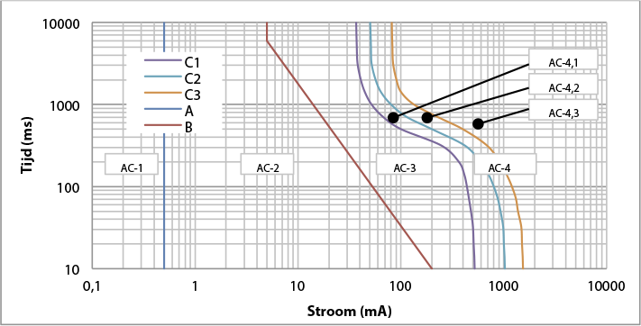In de grafiek is met behulp van vier zones aangegeven in welke mate een menselijk lichaam de stroom ervaart:
Naast deze curven wordt ook wel de Lc-curve toegepast, die zich bevindt in het AC-3 gebied, tussen de curven B en C1. Deze curve is ooit geïntroduceerd door de NEN 1010-commissie en biedt extra zekerheid. De curve ligt op een zodanige afstand van de curve C1, dat verondersteld wordt dat eventuele afwijkingen van de gemiddelde situatie er niet toe leiden dat de curve C1 wordt overschreden.
De stroomsterkte door het lichaam is afhankelijk van de aanrakingsspanning en de weerstand van het lichaam. Deze laatste is niet constant, maar hangt af van:
De lichaamsweerstand is vastgelegd in de internationale norm IEC 60479. De lichaamsweerstand verschilt natuurlijk van persoon tot persoon. Daarom geeft de norm de weerstanden voor statistische bevolkingsgroepen (‘Best knowledge on the Total body impedances for living adults’). Figuur 5.15 geeft de curven met weerstandswaarden waar volgens de statistiek, 5, 50 en 95% van de bevolking onder blijft. De 5%-lijn is de veiligste en die wordt dan ook meestal gebruikt.
De lichaamsweerstand is gespecificeerd voor het geval dat de stroom het traject van een hand naar de andere hand aflegt of van een hand naar een voet. Meestal wordt de lichaamsweerstand berekend voor het aanraken met twee handen en met beide voeten op de grond, zodat de waarde uit de curven volgens IEC 60479 door 2 gedeeld moet worden. De aanrakingsspanning is meestal slechts een deel van de foutspanning, omdat het menselijk lichaam in serie staat met de weerstand van de vloer en van het schoeisel. De schoeiselweerstand Rsch is van veel factoren afhankelijk, maar een gebruikelijke waarde is 1000 Ω. Het uitrekenen van de maximale tijd waarbinnen een foutspanning moet worden afgeschakeld is een iteratief proces, omdat de aanrakingsspanning wordt bepaald door de spanningsdeling over de weerstanden Rm en Rsch over de foutspanning Uf en de weerstand van de mens Rm afhangt van de aanrakingsspanning Ua.
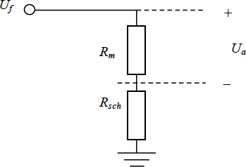Ondanks het feit dat de gevaarlijke invloedsfactor de stroomsterkte is en niet de spanning, zijn de beschermingsmaatregelen vaak geformuleerd als een spanningsbeperking. Hierbij is gebruik gemaakt van het verband tussen de stroomsterkte en de aanrakingsspanning. Dit wordt gedaan omdat een spanning gemakkelijk meetbaar is. In dit boek wordt echter steeds uitgegaan van de stroom door het menselijk lichaam.
Bij toepassing van het TT-stelsel kan een fase-aardsluiting in de installatie van de aangeslotene leiden tot een verhoogde spanning van de lokale aarde. Figuur 5.17 illustreert dit voor een kortsluiting tussen fase L1 en de PE van de installatie van de aangeslotene. Dit kan overigens ook een kortsluiting in een apparaat zijn. Hierdoor wordt de spanning op het lokale aardingssysteem van de aangeslotene verhoogd.

De foutspanning voor een fase-aardfout in een installatie met TT-stelsel kan bij benadering worden berekend aan de hand van een eenvoudig vervangingsschema. In dit vervangingsschema zijn de impedanties weergegeven van de transformator (ZT), de fasegeleider (ZL), de nulgeleider (ZN) en de aardelektrode bij de nettransformator (ZE1) en bij de installatie van de aangeslotene (ZE2). De fout is een fase-aardsluiting in de installatie van de aangeslotene. De foutspanning op de beschermingsleiding van de aangeslotene is Uf. Eveneens zijn aangegeven: de weerstand van het menselijk lichaam (Rm), de schoeiselweerstand naar aarde (Rsch) en de aanrakingsspanning (Ua).

In het schema is zichtbaar dat het retourpad bestaat uit de serieschakeling van de aardelektrodes bij de distributietransformator en bij de installatie van de aangeslotene. De impedantie Zf van het totale circuit voor de kortsluitstroom bestaat dan uit de serieschakeling van de transformatorimpedantie, de fase-impedantie en de retourimpedantie:
[ |
5.6 |
] |
De kortsluitstroom wordt berekend uit de nominale transformatorfasespanning (Unom) en de circuit-impedantie. Hierbij wordt uitgegaan dat de bron aan middenspanningszijde van de transformator oneindig sterk is.
 |
[ |
5.7 |
] |
De foutspanning op de PE van de aangeslotene wordt berekend uit de foutstroom en de impedantie van de aardelektrode van zijn installatie. Dit is gelijk aan de spanningsdeling van deze impedantie op de totale circuitimpedantie.
[ |
5.8 |
] |
Aan de hand van de aldus berekende foutspanning kan de stroom door het menselijk lichaam en daarmee de maximale tijdsduur worden bepaald. De aanrakingsspanning wordt als volgt berekend:
[ |
5.9 |
] |
Vervolgens kan de stroom door het menselijk lichaam worden berekend:
 |
[ |
5.10 |
] |
Aangezien de lichaamsweerstand Rm afhankelijk is van de spanning, moet deze berekening iteratief worden uitgevoerd.
Rekenvoorbeeld TT-stelsel
Een laagspanningsnet wordt gevoed via een 10250/400 V transformator van 250 kVA (uk=4% en Pk=2,8kW). De impedantie van deze
transformator is: ZT = 0,0072 + j0,0246 Ω.
De laagspanningsstreng is 300 m lang. Het kabeltype is 4x95 VVMvKsas/Alk.

De impedantie van de fasegeleider over 300 m is: ZL = 0,0960 + j0,0246 Ω.
De impedantie van de aardelektrode bij de distributietransformator is: ZE1 = 1 Ω.
De impedantie van de aardelektrode bij de installatie van de aangeslotene is: ZE2 = 2 Ω.
Hieruit volgt:
 |
[ |
5.11 |
] |
Volgens de vuistregel van formule 5.1 moet voor de smeltveiligheid gelden:
In < 30 / Zretour = 30 / 3 = 10 A
Door een fase-aardsluiting ontstaat bij de aangeslotene een foutspanning Uf met een absolute waarde van 148 V.
De schoeiselweerstand Rsch is 1000 Ω.
De toegepaste curve voor de lichaamsweerstand is de 5%-curve.
De aanrakingswijze is met twee handen en twee voeten. Hierdoor wordt de lichaamsweerstand door 2 gedeeld: Rm’ = Rm / 2.
De lichaamsweerstand van de mens hangt af van de te berekenen aanrakingsspanning Ua en moet eerst geschat worden. Neem bijvoorbeeld aan dat de
weerstand Rm gelijk is aan de schoeiselweerstand Rsch , waardoor: Ua = Uf / 2 = 74 V.
Uit de 5%-curve volgt: Rm(75) = 1125 Ω.
Uit de gekozen aanrakingswijze volgt: Rm(75)’ = 1125 / 2 = 562,5 Ω.
Uit de spanningsdeling volgt voor de aanrakingsspanning:
Ua = Uf · Rm(75)’ / (Rm(75)’ + Rsch) = 148 · 562,5 / (562,5+1000) = 53 V
Dit is een eerste benadering van de waarde van de aanrakingsspanning. Met deze waarde kan de lichaamsweerstand van de mens worden gecorrigeerd. Volgens de
5%-curve uit figuur 5.15 is de lichaamsweerstand: Rm(53) = 1350 Ω.
Uit de gekozen aanrakingswijze volgt: Rm(53)’ = 1350 / 2 = 675 Ω.
Uit de spanningsdeling volgt voor de aanrakingsspanning:
Ua = Uf · Rm(53)’ / (Rm(53)’ + Rsch) = 148 · 675 / (675+1000) = 60 V
De berekening moet net zolang herhaald worden tot dat de aanrakingsspanning niet meer verandert. In bovenstaand rekenvoorbeeld wordt ervan uitgegaan dat de juiste aanrakingsspanning 60 V is.
De bijbehorende waarde voor Rm(60)’ is 1300 / 2 = 650 Ω. Nu kan de stroom door het lichaam van de mens berekend worden:
 |
[ |
5.12 |
] |
Deze stroomwaarde kan worden opgezocht in de stroom-tijd gevarencurves van figuur 5.14. Hieruit volgt bij toepassing van de C1-curve dat deze stroom ongeveer binnen 550 ms moet worden afgeschakeld.
Hoe snel de kortsluiting daadwerkelijk wordt afgeschakeld, hangt voornamelijk af van de impedanties van de toegepaste aardelektrodes en de specificaties van de toegepaste beveiliging.
Bij toepassing van een TN-stelsel moet rekening gehouden worden met het feit dat fase-aardsluitingen in het elektriciteitsnet leiden tot verhoogde aanrakingsspanningen op het aardingssysteem ten opzichte van de lokale aardpotentiaal bij de aangeslotenen. Figuur 5.20 illustreert dit voor een kortsluiting tussen fase L1 en de nulgeleider, waardoor de spanning op de nulgeleider verhoogd wordt. Doordat op zoveel mogelijk plaatsen de nul- en de PE-geleiders met elkaar verbonden zijn, wordt ook de spanning op het aardingssysteem verhoogd. Een mens, die in aanraking komt met een geaard apparaat, ervaart dan deze verhoogde spanning Uf ten opzichte van de lokale aarde.
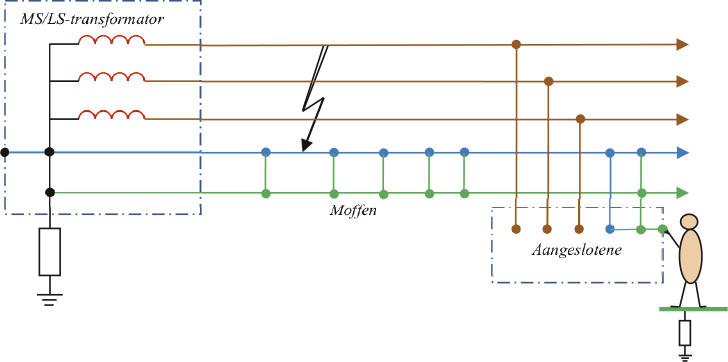De foutspanning voor een fase-aardfout in een laagspanningsstreng met TN-C-S-stelsel kan bij benadering worden berekend aan de hand van een eenvoudig vervangingsschema. In dit vervangingsschema zijn de impedanties weergegeven van de transformator (ZT), de fasegeleider (ZL), de nulgeleider (ZN), de PE-geleider (ZPE) en de aardelektrode bij de nettransformator (ZE1). De fout is een fase-aardsluiting aan het eind van de laagspanningsstreng. De foutspanning op de beschermingsleiding van de aangeslotene is Uf. Eveneens zijn aangegeven: de weerstand van het menselijk lichaam (Rm), de schoeiselweerstand naar aarde (Rsch) en de aanrakingsspanning (Ua).
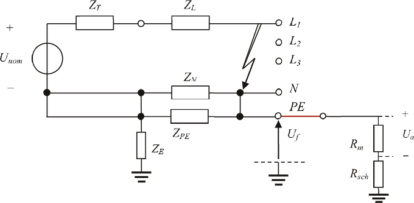In het schema is zichtbaar dat het retourpad bestaat uit de parallelschakeling van de nul- en de PE-geleider. De impedantie Zf van het totale circuit voor de kortsluitstroom bestaat dan uit de serieschakeling van de transformatorimpedantie, de fase-impedantie en de retourimpedantie:
[ |
5.13 |
] |
De kortsluitstroom wordt berekend uit de nominale transformatorspanning en de circuit-impedantie. Hierbij wordt uitgegaan dat de bron aan middenspanningszijde van de transformator oneindig sterk is.
 |
[ |
5.14 |
] |
De foutspanning op de PE wordt berekend uit de foutstroom en de retourimpedantie. Dit is gelijk aan de spanningsdeling van de retourimpedantie op de totale circuitimpedantie.
[ |
5.15 |
] |
De aanrakingsspanning, de stroom door het menselijk lichaam en de maximale tijdsduur worden op dezelfde manier berekenend als in vergelijkingen 5.9 en 5.10. De aanrakingsspanningen en de duur daarvan moeten begrensd blijven tot veilige waarden. Hierom wordt de impedantie van het retourpad zo klein mogelijk gehouden. Door de verhouding van impedanties van de distributietransformator en de fase- en retourgeleiders in de kabel, is de spanningsverhoging het grootst bij kortsluitingen aan het einde van een streng. Dit beperkt in een net met TN-stelsel de lengte van de kabel. Figuur 5.22 toont de spanningsverhoging op de PE-leiding als functie van de afstand van de foutplaats tot de distributietransformator voor een laagspanningsstreng van 300 m lange 4x95 VVMvKsas/Alk kabel, gevoed door een 10250/400 V transformator van 250 kVA. Hierbij is uitgegaan van fase-aardfouten in de netkabel.
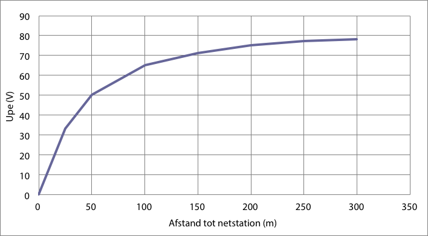Door de toenemende impedantie neemt de kortsluitstroom af naarmate de foutplaats zich verder naar het einde van de streng bevindt, waardoor een smeltveiligheid meer tijd nodig heeft om af te schakelen. Deze combinatie van hogere spanning op de PE en de langere duur van de kortsluiting maakt een kortsluiting op het einde van de streng gevaarlijker dan aan het begin van de streng. Met name dit fenomeen beperkt de lengte van de laagspanningskabel. Toepassing van snelle smeltveiligheden kan ruimte geven in de kabellengte.
Samenvattend wordt de veiligheid bevorderd door een tijdige uitschakeling en door de beperking van de aanrakingsspanning. De tijdige uitschakeling wordt bepaald door de grootte van de kortsluitstroom en de gekozen beveiliging. De hoogte van de aanrakingsspanning wordt bepaald door de grootte van de impedantie van het pad naar de aarde. In het geval dat met traditionele middelen geen aanrakingsveilige situatie mogelijk is, worden snelle smeltveiligheden toegepast.
Een laagspanningsnet wordt gevoed via een 10250/400 V transformator van 250 kVA (uk=4% en Pk=2,8kW).
De impedantie van deze transformator is: ZT = 0,0072 + j0,0246 Ω.
De laagspanningsstreng is 300 m lang. Het kabeltype is 4x95 VVMvKsas/Alk. 
De impedantie van de fasegeleider over 300 m is: ZL = 0,0960 + j0,0246 Ω.
De impedantie van de nulgeleider is gelijk aan die van de fasegeleider: ZN = ZL.
De impedantie van de PE-geleider is: ZPE = 0,15 Ω.
Vanwege de verbindingen tussen de nulgeleider en de PE-geleider zijn zij parallel geschakeld.
Als voorbeeld wordt een fase-aardsluiting aan het einde van de laagspanningsstreng doorgerekend:
[ |
5.16 |
] |
Door een fase-aardsluiting ontstaat bij de aangeslotene een foutspanning Uf met een absolute waarde van 80 V.
De schoeiselweerstand Rsch is 1000 Ω.
De toegepaste curve voor de lichaamsweerstand is de 5%-curve.
De aanrakingswijze is met twee handen en twee voeten. Hierdoor wordt de lichaamsweerstand door 2 gedeeld: Rm’ = Rm / 2.
De lichaamsweerstand van de mens hangt af van de te berekenen aanrakingsspanning Ua en moet eerst geschat worden. Neem bijvoorbeeld aan dat de
weerstand Rm gelijk is aan de schoeiselweerstand Rsch , waardoor: Ua = Uf / 2 = 40 V.
Uit de 5%-curve volgt: Rm(40) = 1500 Ω.
Uit de gekozen aanrakingswijze volgt: Rm(40)’ = 1500 / 2 = 750 Ω.
Uit de spanningsdeling volgt voor de aanrakingsspanning:
Ua = Uf · Rm(40)’ / (Rm(40)’ + Rsch) = 80 · 750 / (750+1000) = 34 V
Dit is een eerste benadering van de waarde van de aanrakingsspanning. Met deze waarde kan de lichaamsweerstand van de mens worden gecorrigeerd. Volgens de
5%-curve uit figuur 5.15 is de lichaamsweerstand: Rm(34) = 1600 Ω.
Uit de gekozen aanrakingswijze volgt: Rm(34)’ = 1600 / 2 = 800 Ω.
Uit de spanningsdeling volgt voor de aanrakingsspanning:
Ua = Uf · Rm(34)’ / (Rm(34)’ + Rsch) = 80 · 800 / (800+1000) = 35 V
De berekening moet net zolang herhaald worden tot dat de aanrakingsspanning niet meer verandert. In bovenstaand rekenvoorbeeld wordt ervan uitgegaan dat de juiste aanrakingsspanning 35 V is. Voor het gemak wordt ook uitgegaan van Rm(35)’ » Rm(34)’. Nu kan de stroom door het lichaam van de mens berekend worden:
 |
[ |
5.17 |
] |
Deze stroomwaarde kan worden opgezocht in de stroom-tijd gevarencurves van figuur 5.14. Hieruit volgt bij toepassing van de C1-curve dat deze stroom ongeveer binnen 1400 ms moet worden afgeschakeld.
Hoe snel bij een fout in het LS-net de kortsluiting daadwerkelijk wordt afgeschakeld, hangt af van het kortsluitvermogen, het type van de kabel, de afstand van de foutplaats tot de bron en de toegepaste beveiliging. Een fout in de installatie van de aangeslotene wordt altijd selectief afgeschakeld door de smeltveiligheid van de aangeslotene zelf.
Niet alleen fase-aardsluitingen in het LS-net, maar ook fase-aardsluitingen in het MS-net hebben invloed op de potentiaalverhoging in de installaties van de aangeslotenen. De fase-aardfout kan optreden aan de primaire zijde van de transformator in het netstation of elders in het middenspanningsnet. De fout in het netstation heeft de grootste invloed op de potentiaalverhoging van de beschermingsleiding in het netstation en in het LS-net dat door het netstation gevoed wordt. Dergelijke fouten leiden ertoe dat er een stroom loopt in de aardelektrode waarmee de metalen delen van het netstation zijn verbonden. De grootte van de foutstroom hangt af van de impedantie van de foutstroomketen en de wijze waarop het hoogspanningssysteem is geaard.
De foutstroom die loopt in de aardingsvoorziening van het netstation veroorzaakt een aanzienlijke verhoging van de potentiaal ten opzichte van aarde, waarbij de hoogte is bepaald door de grootte van de foutstroom en de impedantie van de aardingsvoorziening van het netstation. In een systeem waarbij de nulleiding en beschermingsleiding van het laagspanningsnet zijn verbonden met het aardingssysteem van het netstation, kan de foutstroom als gevolg hebben dat de potentiaal in het laagspanningsnet zodanig verhoogt, dat de isolatie beschadigt of dat de potentiaal van de beschermende leiding en alle verbonden metalen gestellen verhoogt. De grootte en duur van de spanning over de isolatie van het laagspanningsmaterieel in de laagspanningsinstallatie als gevolg van een aardfout in het hoogspanningssysteem zijn vastgelegd in de norm NEN 1010. Indien het voedende MS-net een zwevend sterpunt heeft, wordt toegestaan dat een fase-aardfout enkele uren blijft bestaan. In dat geval mag de fasespanning in het LS-net volgens de norm met maximaal 250 V verhoogd worden. Indien het LS-net wordt gevoed door een met lage impedantie geaard MS-net, wordt een kortsluiting binnen 5 seconden afgeschakeld en mag de fasespanning volgens de norm met maximaal 1200 V verhoogd worden.
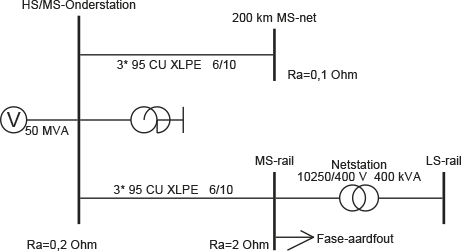De grootte van de potentiaalverhoging op de beschermingsleidingen is evenredig met de grootte van de stroom door de aardverspreidingsweerstand in het netstation. Daarom is het effect groter indien het netstation gevoed wordt door een geaard MS-net dan indien het door een zwevend MS-net gevoed wordt. De potentiaalverhoging in het LS-net als gevolg van een fase-aardsluiting in een impedantiegeaard MS-net wordt aan de hand van het voorbeeld van figuur 5.24 geïllustreerd. Het MS-net is met behulp van een aardingstransformator met lage impedantie geaard. Het net wordt gevoed door een 50 MVA voedingsbron. De aardingstransformator heeft een reactantie van 7 Ω. Op het net is 200 km kabel van het type 3x95 mm2 Cu XLPE 6/10 kV aangesloten, die de capaciteit van alle op het onderstation aangesloten kabels representeert. Een enkele MS-streng van 15 km kabel van het type 3x95 mm2 Cu XLPE 6/10 kV is specifiek gemodelleerd om de potentiaalverhoging als gevolg van de fase-aardsluiting te demonstreren. Aan het einde van deze MS-streng is een netstation gemodelleerd met MS-rail, transformator en LS-rail. Het onderstation heeft een aardingsvoorziening met een weerstand van 0,2 Ω. Het netstation heeft een aardingsvoorziening met een weerstand van 2 Ω.
Op de MS-rail van het netstation wordt een fase-aardsluiting aangebracht. Als gevolg hiervan gaat in dit voorbeeld een kortsluitstroom lopen met een grootte van 677 A. Deze kortsluitstroom vloeit langs twee wegen terug naar de bron: 576 A vloeit door de afscherming van de kabel en 230 A vloeit door de aarde. Deze situatie is in detail afgebeeld in figuur 5.25. De verdeling van de stroom door de afscherming en de stroom door de aarde wordt bepaald door de kabelimpedanties en de aardverspreidingsweerstanden. Als gevolg van de stroom door de aardverspreidingsweerstand in het netstation ontstaat een potentiaalverhoging op de beschermingsleiding, die gelijk is aan het product van de aardverspreidingsweerstand en de erdoor vloeiende stroom. De potentiaalverhoging is theoretisch gelijk aan:
Deze spanning is aanwezig op alle verbonden beschermingsleidingen in het met het netstation verbonden laagspanningsnet. In de praktijk is een laagspanningsnet op meerdere plaatsen geaard en bevinden zich in het achterliggende LS-net door de toegepaste potentiaalvereffening op meerdere locaties bij aangeslotenen contacten met aarde, de zogenaamde verborgen aardcontacten, die parallel geschakeld zijn met de in het netstation aanwezige aardverspreidingsweerstand Ra. Hierdoor wordt de waarde van de equivalente aardverspreidingsweerstand aan de laagspanningszijde van het netstation verlaagd. Een exacte waarde is niet te geven, zodat de waarde moet worden geschat op basis van het aantal aansluitingen in het achterliggende LS-net. Indien hierdoor bijvoorbeeld de aardverspreidingsweerstand in het LS-net van figuur 5.25 zou halveren, halveert ook de potentiaalverhoging op de beschermingsleiding. Het is dus belangrijk hier rekening mee te houden.
In de norm NEN 1010 is een verband aangegeven tussen de hoogte van de foutspanning op de beschermingsleiding in het LS-net en de duur waarbinnen deze spanning in verband met de aanrakingsveiligheid moet worden afgeschakeld, zie figuur 5.26. In de figuur is af te lezen dat een foutspanning van 460 V binnen 0,25 s moet worden afgeschakeld en dat een foutspanning van 230 V binnen 0,45 s moet worden afgeschakeld. Het is hierom belangrijk om met de verborgen aardelektrodes rekening te houden.

Phase to Phase is onderdeel van Technolution. © 2009-2021